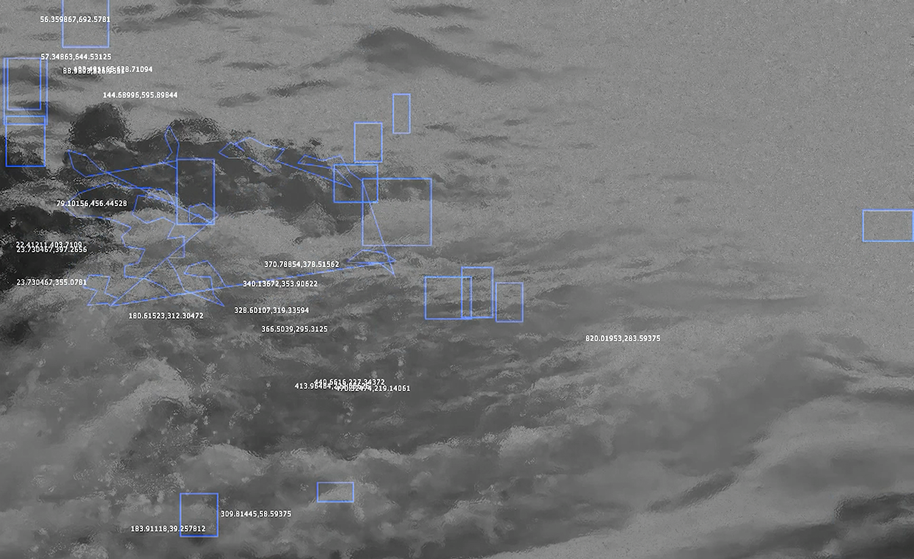
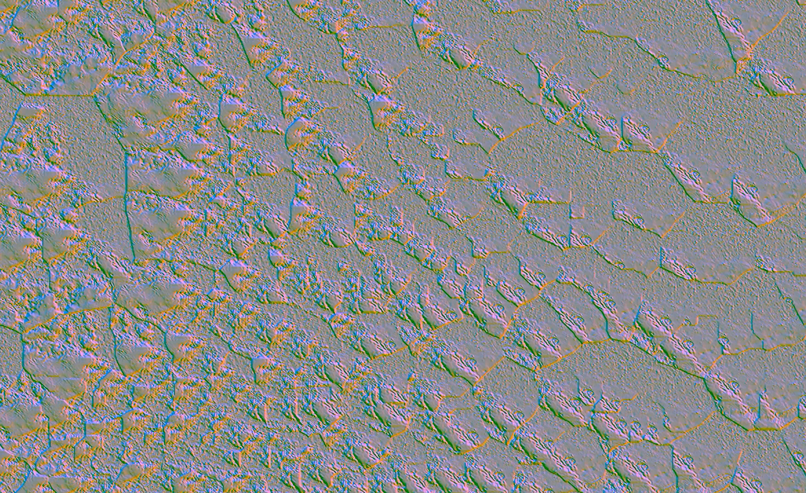

Rhythm Perception explores the process of discovering possibilities through the resonance between consciousness and unconsciousness, conveying the idea that “Can Be Anything.”
 In our lives, signal (meaningful data) and noise (natural, meaningless data) coexist, and we continuously navigate through noise to identify the signal. In this work, consciousness is represented through visuals and unconsciousness through sound, each containing both signal and noise. When the signal of consciousness and the signal of unconsciousness meet, leaving only the essential signal. This moment represents possibility and hope.